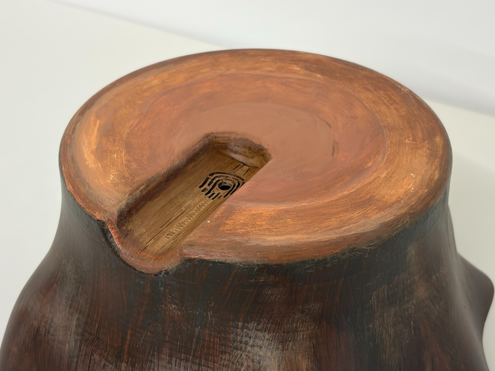
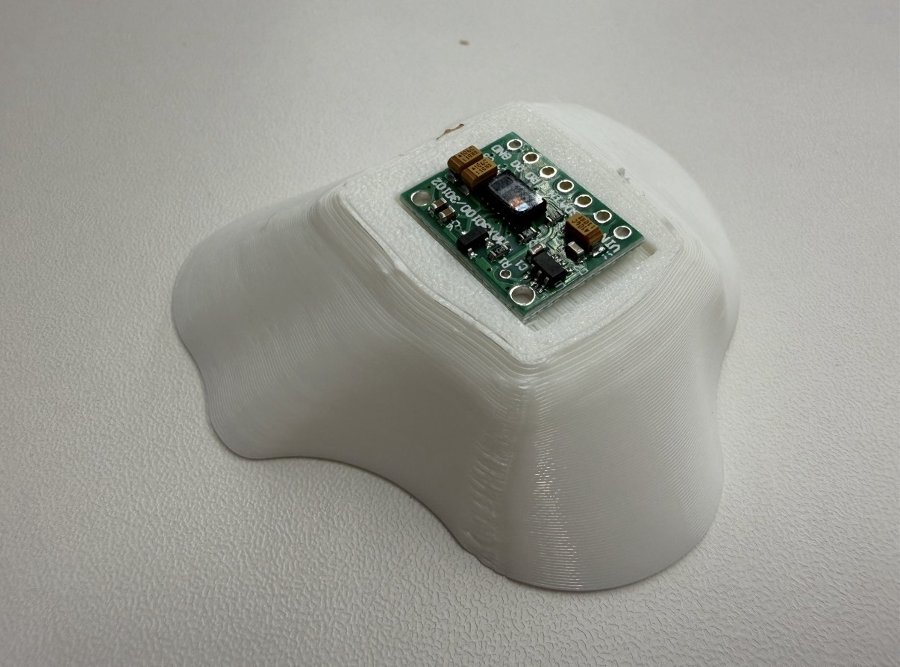
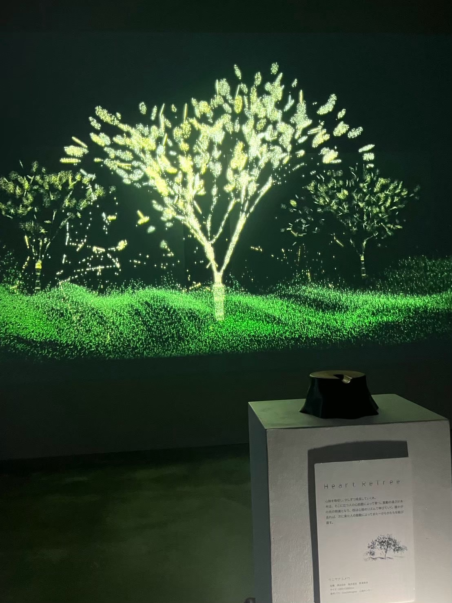

Interactive Art / 2026
Heart Re Tree
あなたの鼓動で、木が育つ。
作品映像
作品について
心拍という、普段は意識しないものを可視化するインタラクティブアート。
切り株の形をした台に指を置くと、内部の心拍センサーが脈拍を計測する。計測した心拍数に応じて、スクリーンの木が発光しながら成長し、鼓動のリズムで明滅する。木の姿は体験する人ごとに変わり、人それぞれ違う心拍のリズムを、目に見える「成長」として体験できる。
木は一本の立体モデルではなく、無数の光の粒子の集まりとして描いた。鼓動を血液の循環、血液を粒子、そして細胞の集まりと捉え、生命が絶えず巡りながら育っていく様子を表している。モチーフには、展示を行った新潟県長岡市の木であるケヤキを選んだ。
Heart Re Tree is an interactive installation that turns an invisible rhythm—your heartbeat—into the growth of a tree. Place a finger on the tree-stump sensor, and a tree made of countless particles of light grows and pulses in time with your heart.
- タイトル
- Heart Re Tree
- 制作年
- 2026年
- 分類
- インタラクティブアート/映像インスタレーション
- 制作期間
- 2026年6月16日〜7月27日
- 展示
- 2026年6月27日・28日
長岡造形大学 スタジオB - サイズ
- センサー台 30×50×85cm
プロジェクター投影(壁面) - 素材・技術
- TouchDesigner、Arduino、心拍センサー(MAX30105)、PLAフィラメント(3Dプリント)、プロジェクター
体験の流れ
-

1切り株に指を置く
切り株の上面にある溝に指を置くと、内部のセンサーが脈拍の計測を始める。
-

25秒間、心拍を測る
5秒間の平均心拍数を計測する。センサーの赤い光が、計測中であることを示す。
-

3木が育ち、明滅する
心拍数に応じた速さで木が成長し、鼓動に合わせて明滅する。計測が終わると発光が止まり、次の人の鼓動を待つ。
仕組み
切り株の内部に組み込んだ心拍センサー(MAX30105)の値をArduinoで処理し、シリアル通信でTouchDesignerへ送る。TouchDesignerでは、植物の成長パターンをアルゴリズムで生成するL-systemを使って木を描き、心拍数に応じて枝の伸び方と発光をリアルタイムに変化させている。
当初は成長の速さだけで心拍の違いを表していたが、それだけでは差が伝わりにくかった。そこで、鼓動に合わせて木が明滅する演出を加え、心拍の違いが直感的にわかるようにした。
空間はプロジェクター1台と展示台1台だけのシンプルな構成にし、体験者が木と自分の鼓動に集中できるようにした。展示では、チームで制作した環境音もあわせて流した。
- 入力指先の脈拍心拍センサー MAX30105
- 処理5秒間の平均心拍数Arduino → シリアル通信
- 生成木の成長・明滅TouchDesigner(L-system・パーティクル)
- 出力壁面への投影プロジェクター
センサー台
センサーを隠しながら作品の世界になじむよう、台を切り株の形にした。3Dプリントした本体に塗装を重ね、本物の切り株らしい質感と形に近づけた。

上面の溝に指を置く 
根元まで切り株らしい形に調整 
塗装前の本体とセンサー基板
制作の過程
はじめはBlenderで木の3Dモデルを作っていたが、リアルタイムに変化させるには処理の重さと制御のしにくさが課題になった。そこでTouchDesignerのL-systemに切り替え、粒子の集まりとして木を描く今の表現にたどり着いた。木の大きさが伝わるように草原と背景のケヤキも加えた。
中間発表では「いつ指を離せばいいのかわからない」という声があった。木が育つ前後に入れていた映像の演出は待たされている印象を与えるため取りやめ、計測が終わったら発光を止める仕様に変えて、体験の区切りがわかるようにした。体験者が近づくと台が光る仕掛けも、画面へ向かう視線の妨げになると判断して外した。
最後まで、計測時間や発光時間、映像のタイミングを調整し続けた。

クレジット
制作:タニザワユメカ(長岡造形大学の学生4名によるチーム)
- 谷 楓
- 演出・ビジュアル制作(TouchDesigner)、センサー台制作補助
- 清水 ゆめ
- 心拍センサーの動作・配置構成、センサー台モックアップ制作、背景映像制作
- 高井 遥加
- 切り株(センサー台)制作
- 野澤 実来
- 心拍数に応じた木の発光ビジュアル制作